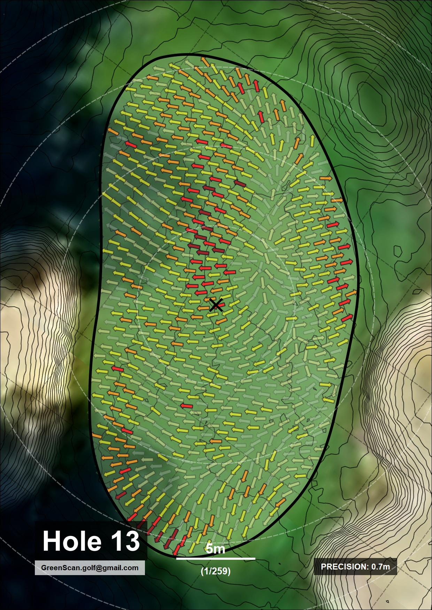
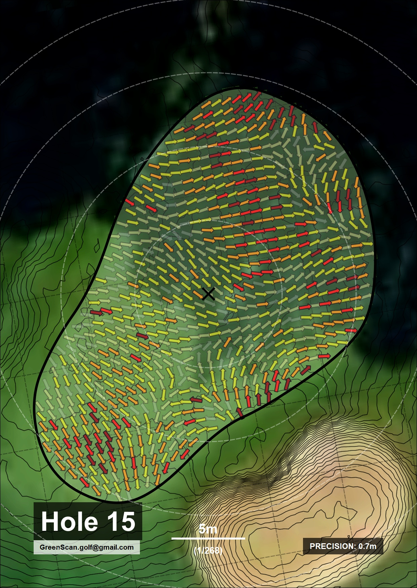
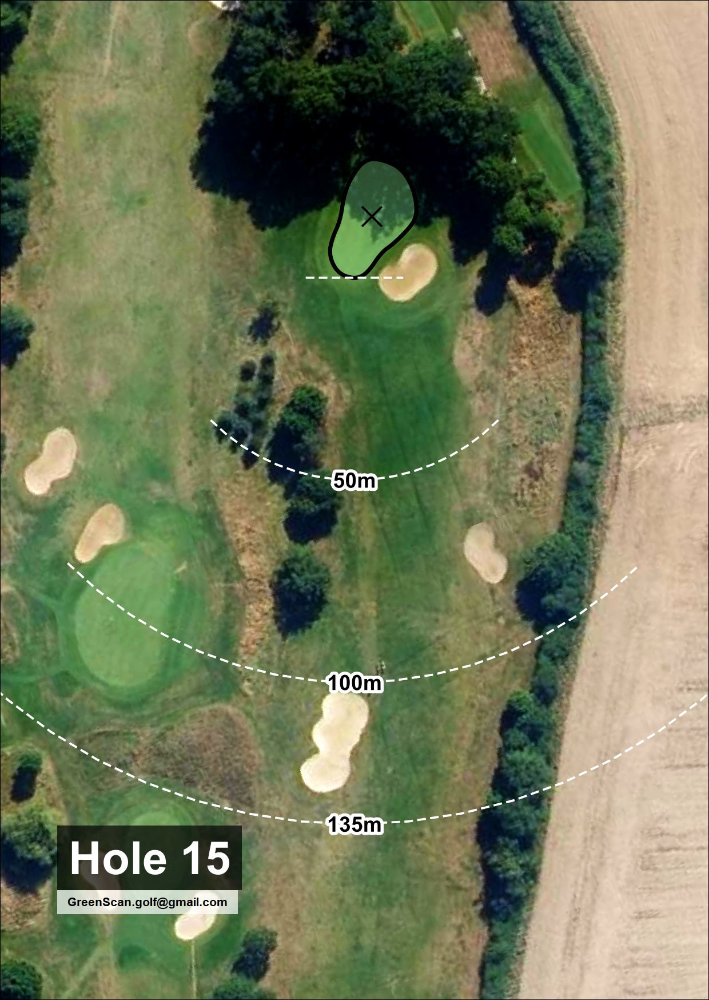
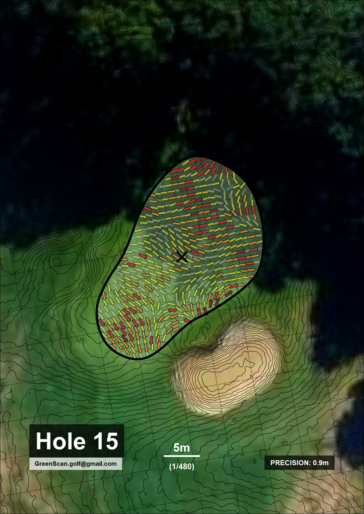

Carnet de green haute définition pour une lecture parfaite de chaque green.
Voir la technologie
Technologie LiDAR
Analysez le terrain comme un pro, et prenez l’avantage sur chaque green.



Acquisition LiDAR Haute Définition avec une densité > 10 impulsions/m².
Nos carnets sont imprimés sur des supports synthétiques premium Couché mat 170 g/m², conçus pour résister aux manipulations intensives tout en garantissant une clarté d'impression parfaite.
Chaque page est pensée pour être lue et utilisée facilement sur le green, pour ne jamais perdre de temps et rester concentré sur votre jeu.
Chaque carnet propose une version complète pour l’entraînement et une version compétition amovible, facile à emporter sur le terrain.
Version enrichie conçue spécifiquement pour l'analyse technique approfondie et le travail précis des pentes sur le green.
Conçue pour le tournoi. Conforme aux exigences de l'USGA et du R&A pour une utilisation en compétition.